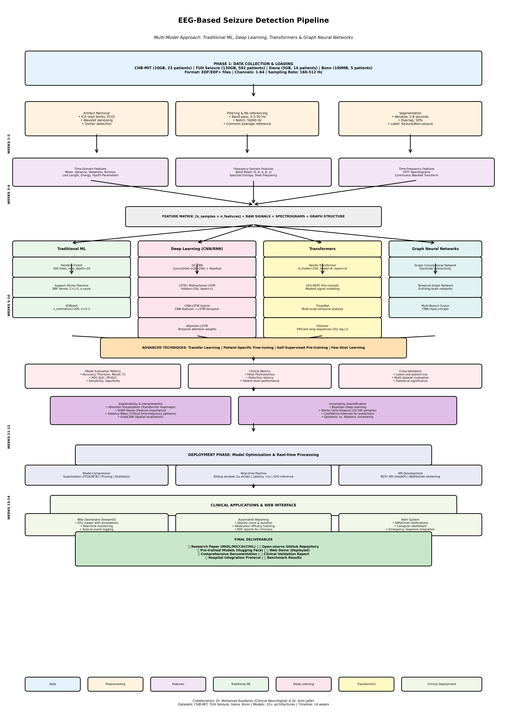

The goal of this project is to develop a comprehensive, clinically-viable seizure detection system
using deep learning on EEG signals. This project will explore state-of-the-art architectures for
time-series analysis, implement multiple modeling techniques, and create an end-to-end pipeline
from raw EEG data to real-time seizure prediction with clinical deployment capabilities.
Key Objectives:
1. Build a robust EEG preprocessing and feature extraction pipeline that can:
- Parse multiple EDF/EDF+ formats (European Data Format)
- Handle various EEG montages (bipolar, referential, average reference)
- Perform artifact removal (eye blinks, muscle artifacts, electrode noise)
- Extract time-domain features (amplitude, variance, line length, energy)
- Extract frequency-domain features (band power, spectral entropy, peak frequency)
- Generate time-frequency representations (spectrograms, wavelets, Hilbert-Huang)
- Handle missing channels and variable sampling rates
- Normalize and standardize across patients and recording sessions
2. Develop comprehensive EEG exploratory data analysis (EDA) toolkit:
- Statistical analysis: seizure duration, inter-ictal period, channel statistics
- Temporal analysis: seizure onset patterns, pre-ictal signatures, post-ictal recovery
- Spectral analysis: power spectral density, band power ratios, coherence
- Spatial analysis: seizure propagation patterns, channel correlations, seizure localization
- Patient-level analysis: seizure frequency, medication effects, circadian patterns
- Annotation quality assessment: expert agreement, label distribution, edge cases
3. Implement and compare multiple seizure detection architectures:
- Traditional Machine Learning (Baseline):
* Random Forest with hand-crafted features
* SVM with spectral and temporal features
* XGBoost with feature engineering
* Logistic Regression with statistical features
- Deep Learning - CNNs for Spectral Analysis:
* 1D CNN on raw EEG signals
* 2D CNN on spectrograms/wavelets
* ResNet-1D for temporal patterns
* EfficientNet on time-frequency images
* Inception networks for multi-scale features
- Deep Learning - RNNs for Temporal Dependencies:
* LSTM for long-term dependencies
* GRU (faster alternative to LSTM)
* Bidirectional LSTM/GRU
* Stacked LSTM with attention
* CNN-LSTM hybrid (spatial + temporal)
- Deep Learning - Transformers:
* Vanilla Transformer for EEG sequences
* BERT-style pre-training on EEG (EEG-BERT)
* GPT-style autoregressive modeling
* Vision Transformer (ViT) on spectrograms
* TimesNet for multi-scale temporal analysis
* Temporal Fusion Transformer (TFT)
* Informer for long sequence modeling
- Graph Neural Networks (GNNs):
* Graph Convolutional Networks (GCN) for electrode connectivity
* GraphSAGE for scalable graph learning
* Temporal Graph Networks for evolving brain networks
- Hybrid Architectures:
* CNN + Transformer (ConvNeXt + attention)
* LSTM + Attention mechanisms
* Multi-branch networks (raw + spectral + graph)
* Ensemble models combining multiple approaches
4. Advanced modeling techniques:
- Multi-task learning (seizure detection + type classification)
- Transfer learning across patients and datasets
- Self-supervised pre-training (masked signal modeling, contrastive learning)
- Few-shot learning for rare seizure types
- Continual learning for patient-specific adaptation
- Uncertainty quantification (Bayesian deep learning, MC Dropout)
- Explainable AI (attention visualization, saliency maps, SHAP)
5. Seizure prediction and early warning:
- Pre-ictal state detection (minutes before seizure)
- Real-time seizure onset detection
- Seizure propagation tracking
- Post-ictal state monitoring
- False alarm suppression
- Patient-specific model fine-tuning
6. Build practical clinical applications:
- Real-time monitoring dashboard
- Automated seizure logging and reporting
- EEG quality assessment
- Medication efficacy tracking
- Sleep stage classification (related task)
- Anomaly detection for rare events
7. Create interactive visualization and analysis tools:
- Multi-channel EEG viewer with annotations
- Spectrogram and time-frequency visualizations
- Attention heatmaps showing model focus
- Seizure propagation animations
- Model performance dashboards
- Patient history and trends
- Confusion matrices and ROC curves
8. Deploy as accessible clinical tool:
- Web application for clinician review
- REST API for hospital integration
- Real-time processing pipeline
- HIPAA-compliant data handling
- Comprehensive documentation
- Clinical validation protocols
 Figure 1: Caption
All datasets are publicly available for research purposes with proper attribution:
PRIMARY DATASETS (Seizure Detection):
1. CHB-MIT Scalp EEG Database (RECOMMENDED FOR BEGINNERS):
- URL: https://physionet.org/content/chbmit/1.0.0/
- Alternative: https://www.kaggle.com/datasets/adibadea/chbmitseizuredataset
- Size: 23 pediatric patients, ~900 hours of continuous EEG, ~10 GB
- Channels: 23 channels (10-20 system)
- Sampling Rate: 256 Hz
- Format: EDF (European Data Format)
- Annotations: 198 seizure events with precise timestamps
- Content: Continuous scalp EEG from patients with intractable seizures
- Duration: Each file 1+ hours
- Classes: Seizure vs. non-seizure (binary)
- Download: Direct from PhysioNet or Kaggle
- Time: 30-45 minutes
- Paper: https://doi.org/10.1109/TBME.2010.2053040
- Clinical Context: Pediatric epilepsy monitoring unit recordings
- Quality: High-quality research-grade EEG
2. TUH EEG Seizure Corpus (TUSZ) (Large-Scale):
- URL: https://isip.piconepress.com/projects/tuh_eeg/html/downloads.shtml
- Size: 5,499 sessions from 592 patients, ~650 hours, ~130 GB
- Channels: Variable (usually 20-26 channels)
- Sampling Rate: 250 Hz or 400 Hz
- Format: EDF
- Annotations: Multi-annotator consensus labels
- Content: Clinical EEG from Temple University Hospital
- Seizure Types: Multiple types (focal, generalized, absence, etc.)
- Classes: Background, seizure (with subtypes)
- Download: Free registration required
- Time: 2-3 hours
- Paper: https://doi.org/10.3389/fninf.2019.00083
- Clinical Context: Diverse patient population, real clinical data
- Quality: Variable (reflects real-world clinical recordings)
3. Siena Scalp EEG Database:
- URL: https://physionet.org/content/siena-scalp-eeg/1.0.0/
- Size: 14 patients, ~130 hours, ~5 GB
- Channels: 29-31 channels
- Sampling Rate: 512 Hz
- Format: EDF
- Annotations: Detailed seizure and artifact labels
- Content: Long-term monitoring in epilepsy unit
- Seizure count: 47 seizure recordings
- Download: Direct from PhysioNet
- Time: 20-30 minutes
- Paper: https://doi.org/10.1016/j.dib.2020.106058
4. EEG Motor Movement/Imagery Dataset (Multi-task):
- URL: https://physionet.org/content/eegmmidb/1.0.0/
- Size: 109 subjects, 1,500+ recordings, ~25 GB
- Channels: 64 channels
- Sampling Rate: 160 Hz
- Format: EDF
- Content: Motor tasks and imagery (not seizure, but useful for transfer learning)
- Use Case: Pre-training, healthy baseline comparison
- Download: Direct from PhysioNet
- Time: 45-60 minutes
5. Bonn University EEG Database (Classic Benchmark):
- URL: http://epileptologie-bonn.de/cms/front_content.php?idcat=193
- Alternative: https://www.kaggle.com/datasets/harunshimanto/epileptic-seizure-recognition
- Size: 500 segments, 5 subjects, ~100 MB
- Channels: Single-channel
- Sampling Rate: 173.61 Hz
- Duration: 23.6 seconds per segment
- Format: TXT files
- Classes: 5 classes (healthy eyes open/closed, epileptic zone, ictal)
- Download: Direct download or Kaggle
- Time: 5 minutes
- Paper: https://doi.org/10.1088/0031-9155/46/2/301
- Note: Small but widely cited, good for quick prototyping
6. EPILEPSIAE Database (European Consortium):
- URL: http://www.epilepsiae.eu/project_outputs/european_database_on_epilepsy
- Size: 30 patients, 3,750+ hours, ~500 GB
- Channels: Up to 128 intracranial + 32 scalp
- Format: Multiple formats
- Download: Requires application approval (research use)
- Time: Several days
- Note: Contains both scalp and intracranial EEG
7. Kaggle Epileptic Seizure Recognition:
- URL: https://www.kaggle.com/c/seizure-prediction
- Size: Pre-processed features from 3 dogs and 2 humans
- Format: MAT files (MATLAB)
- Content: 1-second segments with extracted features
- Use Case: Quick start with pre-processed data
- Download: Kaggle competition data
- Time: 10 minutes
RELATED DATASETS (For Transfer Learning and Multi-task Learning):
8. Sleep-EDF Database:
- URL: https://physionet.org/content/sleep-edf/1.0.0/
- Size: 197 whole-night PSG recordings
- Use Case: Sleep stage classification, domain adaptation
- Channels: EEG, EOG, EMG
- Download: PhysioNet
- Time: 20 minutes
9. MIT-BIH Polysomnographic Database:
- URL: https://physionet.org/content/slpdb/1.0.0/
- Size: 18 recordings, multiple channels
- Use Case: Multi-modal learning (EEG + ECG + respiratory)
PRE-PROCESSED FEATURES (For Faster Prototyping):
10. Extracted EEG Features:
- Several Kaggle datasets provide pre-extracted features
- Spectral features, statistical features, wavelet coefficients
- Use Case: Skip signal processing, focus on modeling
- Size: ~100 MB - 1 GB
- Format: CSV, NumPy arrays
DATASET SELECTION GUIDE:
Beginner (Start Here):
- CHB-MIT (10 GB, 23 patients, well-documented) - RECOMMENDED
- Bonn (100 MB, 5 patients, classic benchmark)
Intermediate:
- Siena (5 GB, high sampling rate, detailed annotations)
- TUH Seizure (subset: 20-30 GB)
Advanced:
- TUH Seizure Full (130 GB, largest public dataset)
- EPILEPSIAE (500 GB, requires approval)
RECOMMENDED STARTING POINT:
1. Start with CHB-MIT (10 GB) - it's manageable, well-documented, and has
high-quality annotations
2. Prototype on Bonn dataset (100 MB) for rapid iteration
3. Scale to TUH Seizure for robustness and generalization
4. Validate on Siena for different patient population
DATA CHARACTERISTICS SUMMARY:
- Total accessible data: ~150 GB (without EPILEPSIAE)
- Patients: 600+ unique patients across datasets
- Seizures: 500+ annotated seizure events
- Recording hours: 1,500+ hours total
- Sampling rates: 160-512 Hz
- Channel counts: 1-64 channels (scalp), up to 128 (intracranial)
Epilepsy affects over 50 million people worldwide, with approximately 30% having drug-resistant
epilepsy. Automated seizure detection and prediction has the potential to dramatically improve
patient safety, enable timely intervention, and reduce the burden on healthcare providers.
WHY THIS PROJECT IS TIMELY AND HIGHLY PUBLISHABLE:
1. TRANSFORMERS ARE REVOLUTIONIZING TIME-SERIES ANALYSIS:
- Recent success of transformers in NLP and vision
- Limited exploration of transformers for EEG analysis
- Self-attention reveals interpretable temporal patterns in brain signals
- Opportunity to adapt BERT, GPT architectures to medical time-series
- Novel architectures like TimesNet, Informer showing promise
- Multi-modal fusion (EEG + clinical data) using cross-attention
2. CLINICAL DEPLOYMENT GAP:
- Many research papers but few deployed systems
- Real-time constraints are rarely addressed
- Robustness to electrode artifacts and patient variability understudied
- This project bridges research and clinical practice
- HIPAA-compliant deployment considerations
- Clinician-in-the-loop design for trust and adoption
3. EXPLAINABILITY IS CRITICAL FOR MEDICAL AI:
- Black-box models not acceptable in clinical settings
- Attention visualization shows which EEG segments trigger predictions
- Saliency maps highlight critical frequency bands and channels
- SHAP values quantify feature importance
- Counterfactual analysis for "what-if" scenarios
- Clinician validation of model reasoning
4. PATIENT-SPECIFIC ADAPTATION:
- Seizure manifestations vary greatly across patients
- Transfer learning from population models to individual patients
- Few-shot learning for patients with limited seizure data
- Continual learning as patient condition evolves
- Meta-learning for rapid personalization
- Active learning to select most informative samples for labeling
5. MULTI-DATASET BENCHMARKING IS RARE:
- Most papers evaluate on single dataset
- Cross-dataset generalization poorly studied
- Opportunity for comprehensive benchmark across CHB-MIT, TUH, Siena, Bonn
- Domain adaptation techniques to improve robustness
- Dataset-specific challenges and characteristics
6. REAL-TIME PREDICTION (NOT JUST DETECTION):
- Most work focuses on seizure detection (during seizure)
- Seizure prediction (minutes before onset) is the holy grail
- Pre-ictal state detection enables preventive intervention
- Early warning systems for patients and caregivers
- Closed-loop therapeutic devices (responsive neurostimulation)
7. PRACTICAL APPLICATIONS WITH HIGH IMPACT:
Clinical Applications:
- Epilepsy monitoring units: reduce need for 24/7 human monitoring
- Ambulatory monitoring: detect seizures in daily life
- Medication management: track efficacy, optimize dosing
- Surgical planning: identify seizure focus, predict outcomes
- Emergency response: automatic alerts to caregivers
Research Applications:
- Drug trials: automated seizure counting, efficacy assessment
- Seizure phenotyping: automated classification of seizure types
- Brain connectivity analysis: seizure propagation patterns
- Biomarker discovery: pre-ictal signatures, predictive features
Patient Quality of Life:
- Independence: patients can live more freely with monitoring
- Safety: alerts prevent injuries during seizures
- Anxiety reduction: knowing help is automatic
- Better treatment: data-driven medication adjustments
8. PUBLICATION VENUES (STRONG ACCEPTANCE FOR QUALITY WORK):
Top Medical AI Conferences:
- MIDL (Medical Imaging with Deep Learning) - dedicated medical AI
- MICCAI (Medical Image Computing and Computer Assisted Intervention)
- CHIL (Conference on Health, Inference, and Learning)
- ML4H (Machine Learning for Healthcare) - NeurIPS workshop
Biomedical Engineering Conferences:
- EMBC (Engineering in Medicine and Biology Conference)
- BHI (Biomedical and Health Informatics)
Machine Learning Conferences:
- NeurIPS (Medical AI track)
- ICML (Healthcare applications)
- ICLR (Time-series and health tracks)
- AAAI (AI for Social Impact)
Neuroscience & Clinical Neurology:
- Society for Neuroscience (SfN)
- American Epilepsy Society (AES)
- International League Against Epilepsy (ILAE)
Signal Processing:
- ICASSP (International Conference on Acoustics, Speech and Signal Processing)
- EUSIPCO (European Signal Processing Conference)
- IEEE Signal Processing in Medicine and Biology Symposium
Journals:
- Nature Medicine / Nature Biomedical Engineering (high-impact)
- IEEE Transactions on Biomedical Engineering (TBME)
- NeuroImage: Clinical
- Epilepsia (clinical epilepsy journal)
- Journal of Neural Engineering
- Clinical Neurophysiology
- Epilepsy & Behavior
- Frontiers in Neuroscience
NOVELTY AND CONTRIBUTION OPPORTUNITIES:
Students can contribute by:
1. Comprehensive transformer benchmark for EEG seizure detection
2. Multi-dataset evaluation (CHB-MIT + TUH + Siena + Bonn)
3. Patient-specific transfer learning and few-shot adaptation
4. Explainable AI framework with attention visualization
5. Real-time deployment pipeline with clinical validation
6. Pre-ictal detection using self-supervised pre-training
7. Multi-task learning (detection + prediction + classification)
8. Graph neural networks for EEG channel connectivity
9. Uncertainty quantification for reliable clinical decisions
10. Open-source toolkit with pre-trained models
RESEARCH QUESTIONS TO EXPLORE:
1. How do transformers compare to CNNs and RNNs for seizure detection?
2. What temporal patterns do attention mechanisms learn in EEG?
3. Can self-supervised pre-training improve few-shot seizure detection?
4. How well do models generalize across different patient populations?
5. What are the optimal input representations (raw, spectrogram, wavelet)?
6. Can we reliably predict seizures minutes before onset?
7. How do we quantify and communicate model uncertainty to clinicians?
8. What are the critical features and frequency bands for seizure detection?
9. How can we make models robust to electrode artifacts and missing data?
10. What is the minimum viable EEG setup (fewer channels) for accurate detection?
BROADER IMPACT:
- Patient Safety: Prevent injuries from undetected seizures
- Healthcare Efficiency: Reduce clinician workload in monitoring
- Research Acceleration: Automated analysis of large EEG datasets
- Accessibility: Enable epilepsy monitoring in resource-limited settings
- Personalized Medicine: Patient-specific models for precision treatment
- Quality of Life: Give patients independence and peace of mind
- Scientific Understanding: Reveal seizure mechanisms through interpretable AI
- Technology Transfer: Methods applicable to other neurological conditions
PHASE 1: EEG DATA PIPELINE & EXPLORATORY DATA ANALYSIS (Weeks 1-2)
Week 1: Data Acquisition and Understanding
- Download CHB-MIT dataset (10 GB) from PhysioNet/Kaggle
- Download Bonn dataset (100 MB) for quick prototyping
- Parse EDF files using MNE-Python or PyEDFlib
- Understand EEG channel naming (10-20 system: Fp1, Fp2, F3, F4, etc.)
- Extract metadata: sampling rate, number of channels, recording duration
- Parse seizure annotations and timestamps
- Visualize example seizure vs. non-seizure segments
- Understand data imbalance (seizures are rare events)
Code deliverable:
```python
# data_loader.py
import mne
import pyedflib
import pandas as pd
import numpy as np
class EEGDataLoader:
def load_edf(self, filepath):
# Load EDF file
raw = mne.io.read_raw_edf(filepath, preload=True)
return raw
def parse_annotations(self, annotation_file):
# Extract seizure start/end times
annotations = pd.read_csv(annotation_file)
return annotations
def segment_data(self, raw, window_size=4, overlap=2):
# Create overlapping windows
segments = []
labels = []
# ... implementation
return segments, labels
```
Week 2: Advanced EEG Preprocessing and Feature Engineering
Preprocessing steps:
- Band-pass filtering (0.5-50 Hz) to remove DC drift and high-frequency noise
- Notch filtering (60 Hz in US, 50 Hz in Europe) for power line noise
- Artifact removal:
* Independent Component Analysis (ICA) for eye blinks, ECG
* Wavelet-based denoising
* Outlier removal (amplitude thresholds)
- Re-referencing (common average reference, bipolar montage)
- Normalization (z-score, min-max, robust scaling)
Feature extraction:
Time-domain features:
- Statistical: mean, variance, skewness, kurtosis, range
- Complexity: Hjorth parameters, line length, energy
- Nonlinear: approximate entropy, sample entropy, fractal dimension
Frequency-domain features:
- Band power: Delta (0.5-4 Hz), Theta (4-8 Hz), Alpha (8-13 Hz),
Beta (13-30 Hz), Gamma (30-50 Hz)
- Spectral entropy, edge frequency, peak frequency
- Power ratios (theta/alpha, delta/theta, etc.)
Time-frequency features:
- Short-time Fourier Transform (STFT) → spectrograms
- Continuous Wavelet Transform (CWT)
- Hilbert-Huang Transform (HHT)
- Empirical Mode Decomposition (EMD)
Code deliverable:
```python
# feature_extraction.py
import scipy.signal as signal
from scipy.stats import skew, kurtosis
import pywt
class FeatureExtractor:
def extract_time_features(self, eeg_segment):
features = {
'mean': np.mean(eeg_segment, axis=1),
'std': np.std(eeg_segment, axis=1),
'skewness': skew(eeg_segment, axis=1),
'kurtosis': kurtosis(eeg_segment, axis=1),
'line_length': np.sum(np.abs(np.diff(eeg_segment, axis=1)), axis=1)
}
return features
def extract_frequency_features(self, eeg_segment, fs=256):
# Compute power spectral density
freqs, psd = signal.welch(eeg_segment, fs=fs)
# Band power
delta = self.band_power(freqs, psd, 0.5, 4)
theta = self.band_power(freqs, psd, 4, 8)
alpha = self.band_power(freqs, psd, 8, 13)
beta = self.band_power(freqs, psd, 13, 30)
gamma = self.band_power(freqs, psd, 30, 50)
return {'delta': delta, 'theta': theta, 'alpha': alpha,
'beta': beta, 'gamma': gamma}
def create_spectrogram(self, eeg_segment, fs=256):
f, t, Sxx = signal.spectrogram(eeg_segment, fs=fs)
return Sxx
```
Exploratory Data Analysis (EDA):
- Distribution of seizure vs. non-seizure segments
- Seizure duration statistics (mean, median, min, max)
- Inter-ictal period analysis
- Channel-wise statistics and correlations
- Frequency band power during seizure vs. baseline
- Spectral analysis: plot average spectrogram for seizure/non-seizure
- Temporal evolution: how signals change before, during, after seizure
- Patient-specific patterns: variability across patients
Visualizations:
- Raw EEG traces (multi-channel plot)
- Spectrograms and time-frequency plots
- Power spectral density comparisons
- Correlation matrices between channels
- t-SNE/UMAP embeddings of features
- Seizure onset patterns (averaged across events)
Code deliverable:
```python
# eda_visualizer.py
import matplotlib.pyplot as plt
import seaborn as sns
class EDAVisualizer:
def plot_raw_eeg(self, eeg_data, seizure_start=None, seizure_end=None):
# Multi-channel time-series plot
fig, axes = plt.subplots(eeg_data.shape[0], 1, figsize=(15, 10))
for i, ax in enumerate(axes):
ax.plot(eeg_data[i])
if seizure_start:
ax.axvspan(seizure_start, seizure_end, alpha=0.3, color='red')
ax.set_ylabel(f'Ch {i+1}')
plt.tight_layout()
def plot_spectrogram(self, eeg_channel, fs=256):
f, t, Sxx = signal.spectrogram(eeg_channel, fs=fs)
plt.pcolormesh(t, f, 10 * np.log10(Sxx), shading='gouraud')
plt.ylabel('Frequency [Hz]')
plt.xlabel('Time [sec]')
plt.colorbar(label='Power [dB]')
def plot_band_power_comparison(self, seizure_features, normal_features):
# Box plots comparing band powers
bands = ['delta', 'theta', 'alpha', 'beta', 'gamma']
fig, axes = plt.subplots(1, 5, figsize=(20, 4))
for i, band in enumerate(bands):
axes[i].boxplot([normal_features[band], seizure_features[band]])
axes[i].set_xticklabels(['Normal', 'Seizure'])
axes[i].set_title(f'{band.capitalize()} Band')
```
PHASE 2: BASELINE MODELS - TRADITIONAL MACHINE LEARNING (Weeks 3-4)
Week 3: Classical ML Baselines
Implement traditional machine learning approaches:
1. Random Forest:
- Input: Hand-crafted features (time + frequency domain)
- Architecture: 100-500 trees, max depth tuning
- Features: 50-100 statistical and spectral features per channel
- Advantage: Interpretable, fast, good baseline
2. Support Vector Machine (SVM):
- Input: Same hand-crafted features
- Kernels: Linear, RBF, polynomial
- Feature scaling critical
- Advantage: Strong performance with limited data
3. XGBoost:
- Gradient boosting on features
- Hyperparameter tuning: learning rate, max depth, n_estimators
- Feature importance analysis
- Advantage: State-of-art for tabular data
Code deliverable:
```python
# traditional_ml.py
from sklearn.ensemble import RandomForestClassifier
from sklearn.svm import SVC
import xgboost as xgb
from sklearn.model_selection import cross_val_score
class TraditionalMLPipeline:
def __init__(self):
self.models = {
'rf': RandomForestClassifier(n_estimators=200),
'svm': SVC(kernel='rbf', probability=True),
'xgb': xgb.XGBClassifier(n_estimators=200)
}
def train_evaluate(self, X_train, y_train, X_test, y_test):
results = {}
for name, model in self.models.items():
model.fit(X_train, y_train)
y_pred = model.predict(X_test)
results[name] = self.compute_metrics(y_test, y_pred)
return results
```
Week 4: Deep Learning Baseline - 1D CNN
First deep learning approach:
Architecture:
```
Input: Raw EEG (n_channels, sequence_length)
↓
Conv1D(64, kernel=7) → BatchNorm → ReLU → MaxPool
↓
Conv1D(128, kernel=5) → BatchNorm → ReLU → MaxPool
↓
Conv1D(256, kernel=3) → BatchNorm → ReLU → MaxPool
↓
Flatten → Dense(512) → Dropout(0.5) → Dense(2)
```
Code deliverable:
```python
# cnn_baseline.py
import torch
import torch.nn as nn
class CNN1D_Baseline(nn.Module):
def __init__(self, n_channels=23, seq_length=1024):
super().__init__()
self.conv1 = nn.Conv1d(n_channels, 64, kernel_size=7, padding=3)
self.bn1 = nn.BatchNorm1d(64)
self.conv2 = nn.Conv1d(64, 128, kernel_size=5, padding=2)
self.bn2 = nn.BatchNorm1d(128)
self.conv3 = nn.Conv1d(128, 256, kernel_size=3, padding=1)
self.bn3 = nn.BatchNorm1d(256)
self.pool = nn.MaxPool1d(2)
self.relu = nn.ReLU()
self.dropout = nn.Dropout(0.5)
self.fc1 = nn.Linear(256 * (seq_length // 8), 512)
self.fc2 = nn.Linear(512, 2)
def forward(self, x):
x = self.pool(self.relu(self.bn1(self.conv1(x))))
x = self.pool(self.relu(self.bn2(self.conv2(x))))
x = self.pool(self.relu(self.bn3(self.conv3(x))))
x = x.view(x.size(0), -1)
x = self.dropout(self.relu(self.fc1(x)))
x = self.fc2(x)
return x
```
PHASE 3: RECURRENT NEURAL NETWORKS FOR TEMPORAL MODELING (Weeks 5-6)
Week 5: LSTM and GRU Networks
1. Vanilla LSTM:
```python
class LSTMSeizureDetector(nn.Module):
def __init__(self, input_size=23, hidden_size=256, num_layers=2):
super().__init__()
self.lstm = nn.LSTM(input_size, hidden_size, num_layers,
batch_first=True, dropout=0.3)
self.fc = nn.Linear(hidden_size, 2)
def forward(self, x):
# x: (batch, seq_len, channels)
lstm_out, (h_n, c_n) = self.lstm(x)
output = self.fc(h_n[-1]) # Use last hidden state
return output
```
2. Bidirectional LSTM:
- Process sequence forward and backward
- Capture both past and future context
- Hidden size doubled (256 * 2 = 512)
3. Attention-based LSTM:
```python
class AttentionLSTM(nn.Module):
def __init__(self, input_size=23, hidden_size=256):
super().__init__()
self.lstm = nn.LSTM(input_size, hidden_size, batch_first=True)
self.attention = nn.Linear(hidden_size, 1)
self.fc = nn.Linear(hidden_size, 2)
def forward(self, x):
lstm_out, _ = self.lstm(x) # (batch, seq, hidden)
attention_weights = torch.softmax(self.attention(lstm_out), dim=1)
context = torch.sum(attention_weights * lstm_out, dim=1)
return self.fc(context)
```
Week 6: CNN-LSTM Hybrid
Combine spatial (CNN) and temporal (LSTM) processing:
```python
class CNN_LSTM(nn.Module):
def __init__(self):
super().__init__()
# CNN for feature extraction
self.conv1 = nn.Conv1d(23, 64, kernel_size=3)
self.conv2 = nn.Conv1d(64, 128, kernel_size=3)
self.pool = nn.MaxPool1d(2)
# LSTM for temporal modeling
self.lstm = nn.LSTM(128, 256, num_layers=2, batch_first=True)
self.fc = nn.Linear(256, 2)
def forward(self, x):
# CNN feature extraction
x = self.pool(F.relu(self.conv1(x)))
x = self.pool(F.relu(self.conv2(x)))
# Reshape for LSTM (batch, seq, features)
x = x.permute(0, 2, 1)
# LSTM temporal modeling
lstm_out, (h_n, _) = self.lstm(x)
return self.fc(h_n[-1])
```
PHASE 4: TRANSFORMER ARCHITECTURES FOR EEG (Weeks 7-8)
Week 7: Vanilla Transformer and EEG-Specific Adaptations
1. Standard Transformer Encoder:
```python
class TransformerSeizureDetector(nn.Module):
def __init__(self, input_dim=23, d_model=256, nhead=8,
num_layers=6, seq_length=1024):
super().__init__()
self.embedding = nn.Linear(input_dim, d_model)
self.pos_encoder = PositionalEncoding(d_model, seq_length)
encoder_layer = nn.TransformerEncoderLayer(
d_model=d_model, nhead=nhead, dim_feedforward=1024
)
self.transformer = nn.TransformerEncoder(encoder_layer, num_layers)
self.fc = nn.Linear(d_model, 2)
def forward(self, x):
# x: (batch, seq_len, channels)
x = self.embedding(x)
x = self.pos_encoder(x)
x = self.transformer(x)
x = x.mean(dim=1) # Global average pooling
return self.fc(x)
```
2. EEG-BERT (Inspired by BERT pre-training):
- Pre-training task: Masked EEG modeling (mask random time segments)
- Fine-tuning: Seizure classification
- Advantage: Learn robust EEG representations from unlabeled data
```python
class EEG_BERT(nn.Module):
def __init__(self):
super().__init__()
self.bert_encoder = TransformerEncoder(...)
def pretrain_step(self, x, mask_indices):
# Mask random segments
masked_x = x.clone()
masked_x[:, mask_indices, :] = 0
# Predict masked segments
reconstructed = self.bert_encoder(masked_x)
loss = F.mse_loss(reconstructed[:, mask_indices, :],
x[:, mask_indices, :])
return loss
def finetune_step(self, x, labels):
features = self.bert_encoder(x)
logits = self.classifier(features.mean(dim=1))
return logits
```
Week 8: Advanced Transformers - TimesNet, Informer
1. TimesNet (Multi-scale Temporal Analysis):
- Converts 1D time series to 2D representations
- Applies 2D convolutions to capture multi-scale patterns
- State-of-art for time-series classification
2. Informer (Efficient Long Sequence Modeling):
- ProbSparse self-attention for long sequences
- Reduces complexity from O(L²) to O(L log L)
- Good for long EEG recordings
3. Temporal Fusion Transformer (TFT):
- Multi-horizon forecasting
- Variable selection network
- Interpretable attention
Code deliverable:
```python
# advanced_transformers.py
from timesnet import TimesNet
from informer import Informer
class TimesNetEEG(nn.Module):
def __init__(self):
super().__init__()
self.timesnet = TimesNet(
seq_len=1024,
pred_len=1,
enc_in=23,
c_out=2,
d_model=256,
n_heads=8
)
def forward(self, x):
return self.timesnet(x)
```
PHASE 5: GRAPH NEURAL NETWORKS AND SPATIAL MODELING (Weeks 9-10)
Week 9: Graph Convolutional Networks for EEG Channels
Model EEG channels as a graph:
- Nodes: EEG electrodes (23 nodes for CHB-MIT)
- Edges: Physical proximity or functional connectivity
- Node features: EEG signals or extracted features
```python
import torch_geometric.nn as gnn
class EEG_GCN(nn.Module):
def __init__(self, num_nodes=23, node_features=256):
super().__init__()
# Feature extraction per channel
self.channel_encoder = nn.LSTM(1, node_features, batch_first=True)
# Graph convolution layers
self.gcn1 = gnn.GCNConv(node_features, 128)
self.gcn2 = gnn.GCNConv(128, 64)
# Classifier
self.fc = nn.Linear(64 * num_nodes, 2)
def forward(self, x, edge_index):
# x: (batch, num_nodes, seq_len)
batch_size = x.size(0)
# Extract features per channel
node_features = []
for i in range(x.size(1)):
_, (h_n, _) = self.channel_encoder(x[:, i:i+1, :].transpose(1, 2))
node_features.append(h_n[-1])
x = torch.stack(node_features, dim=1) # (batch, nodes, features)
# Graph convolution
x = x.view(-1, x.size(-1)) # Flatten batch and nodes
x = F.relu(self.gcn1(x, edge_index))
x = F.relu(self.gcn2(x, edge_index))
x = x.view(batch_size, -1) # (batch, nodes * features)
return self.fc(x)
```
Define graph structure:
```python
def create_eeg_graph():
# Define electrode positions (10-20 system)
electrode_positions = {
'Fp1': (0, 1), 'Fp2': (1, 1),
'F3': (0, 2), 'F4': (1, 2),
# ... all 23 electrodes
}
# Connect spatially adjacent electrodes
edges = []
for i, (name1, pos1) in enumerate(electrode_positions.items()):
for j, (name2, pos2) in enumerate(electrode_positions.items()):
distance = np.sqrt((pos1[0]-pos2[0])**2 + (pos1[1]-pos2[1])**2)
if distance < 1.5 and i != j:
edges.append([i, j])
edge_index = torch.tensor(edges).t()
return edge_index
```
Week 10: Temporal Graph Networks and Multi-branch Architectures
1. Temporal Graph Networks:
- Graph structure evolves over time
- Capture both spatial and temporal dependencies
2. Multi-branch Architecture:
- Branch 1: Raw signal → 1D CNN
- Branch 2: Spectrogram → 2D CNN
- Branch 3: Graph → GCN
- Fusion: Concatenate features → Classifier
```python
class MultiBranchEEG(nn.Module):
def __init__(self):
super().__init__()
# Branch 1: Raw signal processing
self.raw_branch = CNN1D_Baseline()
# Branch 2: Spectrogram processing
self.spec_branch = ResNet18_2D()
# Branch 3: Graph processing
self.graph_branch = EEG_GCN()
# Fusion layer
self.fusion = nn.Linear(512 + 512 + 256, 2)
def forward(self, raw_eeg, spectrogram, graph_data):
feat1 = self.raw_branch(raw_eeg)
feat2 = self.spec_branch(spectrogram)
feat3 = self.graph_branch(graph_data['x'], graph_data['edge_index'])
combined = torch.cat([feat1, feat2, feat3], dim=1)
return self.fusion(combined)
```
PHASE 6: ADVANCED TECHNIQUES AND OPTIMIZATION (Weeks 11-12)
Week 11: Transfer Learning and Domain Adaptation
1. Pre-training strategies:
- Pre-train on large dataset (TUH) → Fine-tune on CHB-MIT
- Pre-train on sleep-stage classification → Transfer to seizure detection
- Self-supervised pre-training on unlabeled EEG
2. Patient-specific adaptation:
```python
# Transfer learning pipeline
def patient_specific_finetuning(pretrained_model, patient_data):
# Freeze early layers
for param in pretrained_model.conv_layers.parameters():
param.requires_grad = False
# Fine-tune classifier only
optimizer = torch.optim.Adam(
pretrained_model.fc.parameters(), lr=0.0001
)
# Train on patient-specific data (few-shot)
for epoch in range(10):
loss = train_epoch(pretrained_model, patient_data, optimizer)
return pretrained_model
```
3. Domain adaptation techniques:
- Adversarial training for domain-invariant features
- Maximum Mean Discrepancy (MMD) loss
- Correlation alignment (CORAL)
Week 12: Uncertainty Quantification and Explainability
1. Bayesian Deep Learning:
```python
class BayesianCNN(nn.Module):
def __init__(self):
super().__init__()
self.conv1 = nn.Conv1d(23, 64, 3)
self.dropout1 = nn.Dropout(0.3)
self.conv2 = nn.Conv1d(64, 128, 3)
self.dropout2 = nn.Dropout(0.3)
self.fc = nn.Linear(128, 2)
def forward(self, x, num_samples=10):
predictions = []
for _ in range(num_samples):
# Stochastic forward pass
out = self.dropout1(F.relu(self.conv1(x)))
out = self.dropout2(F.relu(self.conv2(out)))
out = self.fc(out.mean(dim=2))
predictions.append(out)
# Compute mean and variance
predictions = torch.stack(predictions)
mean_pred = predictions.mean(dim=0)
uncertainty = predictions.std(dim=0)
return mean_pred, uncertainty
```
2. Attention Visualization:
```python
def visualize_attention(model, eeg_segment):
# Get attention weights from transformer
attention_weights = model.get_attention_weights(eeg_segment)
# Plot heatmap
plt.figure(figsize=(12, 4))
plt.imshow(attention_weights, aspect='auto', cmap='hot')
plt.colorbar(label='Attention Weight')
plt.xlabel('Time Step')
plt.ylabel('Attention Head')
plt.title('Temporal Attention Patterns')
plt.show()
```
3. SHAP Values for Feature Importance:
```python
import shap
def explain_prediction(model, eeg_sample):
explainer = shap.DeepExplainer(model, background_data)
shap_values = explainer.shap_values(eeg_sample)
# Plot feature importance
shap.summary_plot(shap_values, eeg_sample,
feature_names=channel_names)
```
PHASE 7: CLINICAL DEPLOYMENT AND REAL-TIME SYSTEM (Weeks 13-14)
Week 13: Real-Time Processing Pipeline
1. Streaming EEG Processing:
```python
class RealTimeSeizureDetector:
def __init__(self, model, window_size=4, stride=1):
self.model = model
self.window_size = window_size
self.stride = stride
self.buffer = collections.deque(maxlen=window_size * 256)
def process_new_sample(self, eeg_sample):
# Add to buffer
self.buffer.append(eeg_sample)
# When buffer is full, make prediction
if len(self.buffer) == self.buffer.maxlen:
segment = np.array(self.buffer)
prediction, uncertainty = self.model.predict(segment)
if prediction == 'seizure' and uncertainty < 0.1:
self.trigger_alert()
# Slide window
for _ in range(self.stride * 256):
self.buffer.popleft()
def trigger_alert(self):
# Send notification to clinician/caregiver
send_notification("Seizure detected!")
```
2. Latency Optimization:
- Model quantization (FP32 → FP16 or INT8)
- Pruning: Remove low-importance weights
- Knowledge distillation: Large model → Small model
- ONNX export for optimized inference
Week 14: Web Application and Clinical Interface
Streamlit/Gradio Dashboard:
```python
import streamlit as st
st.title("EEG Seizure Detection System")
# File upload
uploaded_file = st.file_uploader("Upload EDF file", type=['edf'])
if uploaded_file:
# Load and process
eeg_data = load_edf(uploaded_file)
# Display raw EEG
st.subheader("Raw EEG Signals")
fig = plot_eeg_channels(eeg_data)
st.pyplot(fig)
# Run detection
if st.button("Detect Seizures"):
with st.spinner("Processing..."):
predictions, timestamps = model.predict(eeg_data)
# Display results
st.subheader("Detection Results")
for i, (pred, time) in enumerate(zip(predictions, timestamps)):
if pred == 1:
st.error(f"⚠️ Seizure detected at {time}")
# Visualization
st.subheader("Attention Heatmap")
attention_fig = visualize_attention(model, eeg_data)
st.pyplot(attention_fig)
```
EVALUATION METRICS:
1. Classification Metrics:
- Accuracy, Precision, Recall, F1-Score
- ROC-AUC, PR-AUC (important for imbalanced data)
- Sensitivity (True Positive Rate) - critical for medical application
- Specificity (True Negative Rate)
- False Positive Rate per hour (FPR/h) - clinical standard
2. Temporal Metrics:
- Detection latency (time from seizure onset to detection)
- Prediction horizon (how early can we predict)
- Event-based metrics (per seizure, not per segment)
3. Clinical Metrics:
- Patient-level performance (not just segment-level)
- Cross-patient generalization
- Robustness to electrode artifacts
CODE ORGANIZATION:
```
eeg-seizure-detection/
├── data/
│ ├── raw/ # Original EDF files
│ ├── processed/ # Preprocessed numpy arrays
│ └── annotations/ # Seizure labels
├── src/
│ ├── data_processing/
│ │ ├── loader.py
│ │ ├── preprocessor.py
│ │ └── feature_extractor.py
│ ├── models/
│ │ ├── cnn.py
│ │ ├── lstm.py
│ │ ├── transformer.py
│ │ ├── gnn.py
│ │ └── ensemble.py
│ ├── training/
│ │ ├── trainer.py
│ │ └── callbacks.py
│ ├── evaluation/
│ │ ├── metrics.py
│ │ └── visualizer.py
│ └── deployment/
│ ├── realtime.py
│ └── api.py
├── notebooks/
│ ├── 01_EDA.ipynb
│ ├── 02_Baseline_Models.ipynb
│ ├── 03_Deep_Learning.ipynb
│ └── 04_Transformers.ipynb
├── configs/
│ └── model_configs.yaml
├── tests/
├── app.py # Streamlit app
├── requirements.txt
└── README.md
```
EXPERIMENT TRACKING:
Use Weights & Biases (wandb) for comprehensive tracking:
```python
import wandb
wandb.init(project="eeg-seizure-detection",
config={
"model": "Transformer",
"dataset": "CHB-MIT",
"learning_rate": 0.001,
"batch_size": 32
})
# Log metrics
wandb.log({
"train_loss": loss,
"val_accuracy": accuracy,
"val_auc": auc
})
# Log visualizations
wandb.log({"attention_heatmap": wandb.Image(fig)})
```
Week 1: Dataset Download, EDF Parsing, Initial EDA
Week 2: Advanced Preprocessing, Feature Engineering, Spectral Analysis
Week 3: Traditional ML Baselines (Random Forest, SVM, XGBoost)
Week 4: Deep Learning Baseline (1D CNN)
Week 5: LSTM and GRU Networks
Week 6: CNN-LSTM Hybrid, Bidirectional Networks
Week 7: Transformer Implementation, EEG-BERT
Week 8: Advanced Transformers (TimesNet, Informer, TFT)
Week 9: Graph Neural Networks (GCN for EEG channels)
Week 10: Temporal Graph Networks, Multi-branch Architecture
Week 11: Transfer Learning, Patient-specific Adaptation
Week 12: Uncertainty Quantification, Explainability (SHAP, Attention)
Week 13: Real-time Processing, Deployment Pipeline
Week 14: Web Application, Clinical Interface, Documentation
TOTAL: 14 weeks (one semester)
KEY MILESTONES:
- Week 2: Clean datasets, comprehensive EDA complete, preprocessing pipeline working
- Week 4: All baseline models trained (ML + 1D CNN)
- Week 6: RNN models implemented and benchmarked
- Week 8: Transformer models trained and evaluated
- Week 10: All architectures complete, multi-dataset evaluation done
- Week 12: Explainability tools ready, uncertainty quantification implemented
- Week 14: Paper submitted, code released, web demo deployed
DELIVERABLES BY WEEK 14:
- 8-page conference paper (MIDL/MICCAI/CHIL format)
- GitHub repository with full implementation
- Pre-trained models on Hugging Face/Zenodo
- Interactive web demo (Streamlit with real-time capability)
- Comprehensive documentation and tutorials
- Jupyter notebooks for reproducibility
- Clinical validation report
- Presentation slides and poster
- Blog post explaining methodology and clinical impact
- Video demonstrations of real-time system
RECOMMENDED: 2-3 students
ROLE DISTRIBUTION FOR 3 STUDENTS:
Student 1: Data Engineering & Signal Processing Specialist
- Responsibilities:
* Download and organize EEG datasets (CHB-MIT, TUH, Siena, Bonn)
* Parse EDF files and extract metadata
* Implement comprehensive preprocessing pipeline
* Perform artifact removal (ICA, wavelet denoising)
* Extract time, frequency, and time-frequency features
* Conduct extensive EDA with visualizations
* Create PyTorch data loaders and augmentation
* Quality control and dataset documentation
- Skills: Python, Signal Processing, MNE-Python, SciPy, Data Analysis
- Deliverables: Clean datasets, EDA report, feature extraction library
Student 2: Deep Learning & Model Development Specialist
- Responsibilities:
* Implement baseline models (CNN, LSTM, CNN-LSTM)
* Implement traditional ML baselines (RF, SVM, XGBoost)
* Train and optimize all models
* Hyperparameter tuning and experiment tracking (wandb)
* Cross-validation and statistical testing
* Model evaluation and comparison
* Performance benchmarking across datasets
* Write training pipelines and callbacks
- Skills: PyTorch, Deep Learning, Machine Learning, Experiment Design
- Deliverables: All baseline models, training scripts, benchmark results
Student 3: Advanced Architectures & Deployment Specialist
- Responsibilities:
* Implement transformer models (vanilla, EEG-BERT, TimesNet, Informer)
* Implement graph neural networks for EEG
* Transfer learning and domain adaptation
* Uncertainty quantification (Bayesian, MC Dropout)
* Explainability tools (attention visualization, SHAP)
* Real-time processing pipeline
* Web application development (Streamlit)
* Model deployment and clinical interface
- Skills: PyTorch, Transformers, GNNs, Web Development, Deployment
- Deliverables: Advanced models, explainability tools, web app, real-time system
SHARED RESPONSIBILITIES (All Students):
- Weekly team meetings for integration and planning
- Collaborative paper writing (divided by sections)
- Code reviews and documentation
- Experiment result discussion and analysis
- Clinical consultation (with Dr. Koubeissi)
- Presentation preparation
- GitHub repository maintenance
- Literature review and related work
COMMUNICATION STRUCTURE:
- Weekly progress meetings (90 minutes)
- Daily standups (15 minutes via Slack/Discord)
- Bi-weekly meetings with Dr. Koubeissi for clinical guidance
- Shared experiment tracking (Weights & Biases)
- Google Docs for collaborative writing
- GitHub for code collaboration with PR reviews
- Notion/Trello for project management
- Slack channel for quick communication
FOR 2 STUDENTS:
- Student 1: Data + Preprocessing + EDA + Traditional ML + CNNs/RNNs
- Student 2: Transformers + GNNs + Explainability + Deployment + Web App
FOR 4 STUDENTS (If Available):
- Student 4: Clinical Validation & Analysis Specialist
* Cross-dataset evaluation and generalization study
* Statistical significance testing
* Clinical metric computation (FPR/h, detection latency)
* Error analysis and failure case investigation
* Patient-level performance analysis
* Robustness testing (artifacts, missing channels)
* Comparison with SOTA methods from literature
* Result visualization and paper figures
* Clinical documentation and user manual
TECHNICAL CHALLENGES AND SOLUTIONS:
1. CLASS IMBALANCE (Seizures are rare events):
Problem: ~1-5% of EEG contains seizures
Solutions:
- Weighted loss functions (higher weight for seizure class)
- Focal loss to focus on hard examples
- Synthetic minority oversampling (SMOTE)
- Data augmentation (time warping, jittering, channel dropout)
- Use F1-score, ROC-AUC instead of accuracy
- Ensemble methods
2. PATIENT VARIABILITY (Different seizure manifestations):
Problem: Models trained on one patient may not generalize
Solutions:
- Transfer learning: population model → patient-specific fine-tuning
- Meta-learning for rapid adaptation
- Domain adaptation techniques
- Patient-specific feature normalization
- Leave-one-patient-out cross-validation
- Multi-task learning across patients
3. COMPUTATIONAL RESOURCES:
Problem: Transformers and GNNs are memory-intensive
Solutions:
- Start with smaller models, scale up gradually
- Use gradient accumulation for larger batch sizes
- Mixed precision training (FP16)
- Model pruning and quantization
- Use Google Colab Pro or university GPU cluster
- Efficient attention mechanisms (linear attention)
- Distributed training if multiple GPUs available
4. DATA SIZE:
Problem: TUH dataset is 130 GB
Solutions:
- Start with CHB-MIT (10 GB)
- Download TUH subset (20-30 GB)
- Use pre-extracted features for prototyping
- Incremental learning: train on batches
- Data streaming instead of loading all into memory
5. ANNOTATION QUALITY:
Problem: Seizure boundaries are subjective, inter-rater variability
Solutions:
- Use consensus annotations from TUH (multi-expert)
- Soft labels with uncertainty
- Attention to annotation guidelines
- Validate on multiple datasets
- Clinical expert review (Dr. Koubeissi)
6. ARTIFACT CONTAMINATION:
Problem: Eye blinks, muscle artifacts, electrode noise
Solutions:
- Rigorous preprocessing (ICA, wavelet denoising)
- Artifact detection and rejection
- Robust features less sensitive to artifacts
- Data augmentation with artificial artifacts
- Annotate artifact-heavy regions and exclude
7. OVERFITTING (Limited seizure events):
Problem: Models memorize training seizures
Solutions:
- Strong regularization (dropout 0.3-0.5)
- Data augmentation
- Early stopping based on validation set
- Cross-validation
- Simplify model architecture if overfitting persists
- Use pre-trained models (transfer learning)
8. REAL-TIME LATENCY:
Problem: Clinical deployment requires <1 second latency
Solutions:
- Model compression (pruning, quantization)
- Knowledge distillation (large model → small model)
- Efficient architectures (MobileNet-style)
- ONNX runtime for optimized inference
- Sliding window approach (process incrementally)
- GPU inference for speed
9. FALSE POSITIVES:
Problem: High false positive rate frustrates clinicians
Solutions:
- Post-processing: require sustained prediction (3+ consecutive windows)
- Ensemble methods to increase confidence
- Uncertainty thresholding (only alert if certain)
- Multi-stage pipeline: fast screener → accurate verifier
- Learn from false positives (add to training data)
10. REPRODUCIBILITY:
Problem: Random seeds, library versions, hardware differences
Solutions:
- Fix random seeds (torch.manual_seed, np.random.seed)
- Document exact library versions (requirements.txt)
- Use Docker containers for consistent environment
- Provide pre-trained models
- Detailed documentation of hyperparameters
- Share preprocessed data
11. CLINICAL VALIDATION:
Problem: Research metrics ≠ clinical utility
Solutions:
- Collaborate with Dr. Koubeissi for clinical evaluation
- Use clinically relevant metrics (FPR/h, detection latency)
- Retrospective validation on held-out patients
- Prospective validation on new recordings
- User studies with clinicians (web demo)
- Compare against clinical EEG technicians
12. ETHICAL AND PRIVACY CONCERNS:
Problem: Patient data is sensitive
Solutions:
- Use only de-identified, publicly available datasets
- HIPAA compliance if deploying clinically
- Data encryption for storage and transmission
- Secure web application (HTTPS, authentication)
- No patient identifiers in publications
- IRB approval if collecting new data
RISK MITIGATION TIMELINE:
- Weeks 1-2: Validate data pipeline, ensure datasets are accessible
- Weeks 3-4: Verify baselines train correctly, establish infrastructure
- Weeks 5-6: Monitor for overfitting, implement regularization
- Weeks 7-8: Test transformer memory usage, optimize if needed
- Weeks 9-10: Validate GNN graph construction, test multi-branch fusion
- Weeks 11-12: Clinical validation, gather feedback from Dr. Koubeissi
- Weeks 13-14: Deployment testing, latency benchmarking, final validation